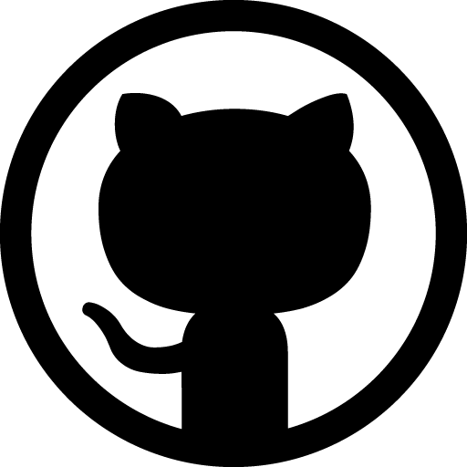

<footer class="seccion-oscura d-flex flex-column align-items-center justify-content-center"> 
    
    <p class="footer-texto text-center">Aprendiendo todos los días.<br></p>
    <div class="iconos-redes-sociales d-flex flex-wrap align-items-center justify-content-center">
      <!--<a href="https://twitter.com/freecodecampES" target="_blank" rel="noopener noreferrer">
        <i class="bi bi-twitter"></i>
      </a>-->
      <a href="#" target="_blank" rel="noopener noreferrer">
        
      </a>
      <a href="#" target="_blank" rel="noopener noreferrer">
        
      </a>
      <a href="#" target="_blank" rel="noopener noreferrer">
        
      </a>
      <a href="#" target="_blank" rel="noopener noreferrer">
        
      </a>
    </div>
    <div class="derechos-de-autor">Creado por Giuliana Molaro (2023) &#169; <br> Mendoza, Argentina
    </div>
  </footer>

